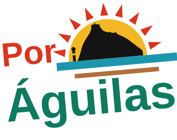

{{ e.cap }}
Candidatura municipalista · Águilas
Águilas se vive todo el año.
Somos las vecinas y vecinos que no se van en septiembre. Los que pagan el alquiler en enero, los que esperan en urgencias en noviembre y los que pelean por un pueblo que funcione los doce meses. Por Águilas pone el pueblo por delante del escaparate.
{{ dias }}
días para las municipales
21
concejales en juego
4
ejes que mandan en la campaña
Por dónde empezamos
Cuatro cosas, dichas claras.
No hacemos un programa de doscientas páginas que nadie lee. Hacemos cuatro compromisos que se pueden comprobar desde el primer pleno.

Las 15 medidas
Quince medidas para empezar
Las quince que definen el mandato. Si en cuatro años solo se hubieran hecho estas, habría merecido la pena.
- {{ m.t }}
Últimas notas
Lo que hemos dicho esta semana
FOTO PENDIENTE
{{ n.tema }}
{{ n.tema }}
{{ n.tema }}
{{ n.fecha }}
{{ n.t }}
{{ n.r }}
FOTO PENDIENTE
portada del programa
o acto de calle
portada del programa
o acto de calle
El programa
Cuatro ejes, propuestas comprobables.
Cada propuesta se puede llevar a un pleno, se puede presupuestar y se puede auditar. El documento se ampliará con las aportaciones de la asamblea abierta y de las mesas sectoriales.
El documento que se descarga es un borrador de trabajo. Mientras lo sea, lo que manda es esta web.
Próximas citas
Dónde nos vas a encontrar
{{ e.d }}
{{ e.m }}
{{ e.t }}
{{ e.desc }}
{{ e.l }}
Quiénes somos
Una candidatura de Águilas, hecha en Águilas.
Por Águilas es un proyecto municipalista de izquierdas hecho en el pueblo y para el pueblo. Nace del trabajo de años en el municipio y se abre a personas independientes del movimiento vecinal, sindical, feminista y ecologista que quieren gobernar este pueblo de otra manera.
Por qué una marca propia
Porque lo que se decide en mayo de 2027 no es un debate de siglas: es si en Águilas se puede alquilar un piso, si el centro de salud atiende en agosto y en febrero, y si la costa la ordena el pleno o la ordena quien compra. Por Águilas es el nombre bajo el que llevamos ese debate a la calle.
Detrás no hay ningún misterio: la impulsan Izquierda Unida y el Partido Comunista, y lo decimos con todas las letras aquí y en cada acto. Lo que hacemos es poner por delante el asunto —Águilas— y no el membrete. Quien quiera saber de dónde venimos lo tiene escrito en esta página; quien quiera sumarse no necesita carné para hacerlo.
Cómo tomamos las decisiones
Asamblea abierta mensual, cuentas publicadas y candidatura elaborada con participación de las personas inscritas en el proyecto. Los cargos electos se comprometen por escrito a limitación salarial, publicación de agenda y rendición de cuentas semestral ante la asamblea.
Con quién contamos
Con el tejido asociativo del municipio: asociaciones de vecinos de las barriadas y las diputaciones, colectivo pesquero y agrario, AMPAs, plataformas por la sanidad pública, entidades ecologistas del litoral y el sindicalismo de clase. La candidatura no sustituye a nadie: acompaña y traslada al pleno lo que ya se pelea en la calle.
FOTO PENDIENTE
grupo de la candidatura
en la calle, luz natural
grupo de la candidatura
en la calle, luz natural
Pendiente de completar: nombres del equipo, trayectoria de la persona candidata a la Alcaldía y enlace a los estatutos internos.
{{ programa.titulo }}
{{ programa.lema }}
{{ programa.version }}
{{ programa.nota }}
Lo esencial
Quince medidas para empezar
Las quince que definen el mandato. Si en cuatro años solo se hubieran hecho estas, habría merecido la pena.
- {{ m.t }} {{ m.d }}
Eje {{ e.n }}
{{ e.tema }}
{{ e.lema }}
El problema
{{ q.txt }}
{{ g.t }}
- {{ m.txt }}
Honestidad competencial
Lo que no depende del Ayuntamiento
{{ competenciasIntro }}
Asunto
Quién decide
Qué hará el Ayuntamiento
{{ c.a }}
{{ c.q }}
{{ c.h }}
Rendición de cuentas
Cómo comprobar si cumplimos
{{ indicadoresIntro }}
Indicador
Punto de partida
Objetivo del mandato
{{ d.i }}
{{ d.p }}
{{ d.o }}
De dónde salen las cifras
Fuentes
{{ fuentesNota }}
Las once fuentes, una por una
- {{ f.txt }}
Descargar el programa
El documento de trabajo completo, tal cual se edita. Mientras sea un borrador, lo que manda es esta página.
{{ descargaNombre }}
Sala de prensa
Notas de prensa y posiciones públicas.
Todo lo que decimos, con fecha y por escrito. Los medios pueden reproducir estos textos libremente citando la fuente.
FOTO PENDIENTE
{{ n.tema }}
{{ n.tema }}
{{ n.tema }}
{{ n.fecha }}
{{ n.t }}
{{ n.r }}
Todavía no hay notas publicadas en este tema.
Agenda
Actos, asambleas y calendario electoral.
{{ dias }}
días para la jornada electoral. La fecha prevista es el domingo 23 de mayo de 2027, cuarto domingo de mayo, a confirmar en la convocatoria oficial.
Próximos actos
{{ e.d }}
{{ e.m }}
{{ e.t }}
{{ e.desc }}
{{ e.l }}
Calendario electoral orientativo
-
Los plazos legales son orientativos y hay que contrastarlos con el calendario oficial que publique la Junta Electoral una vez convocadas las elecciones.
Súmate
Aquí no hace falta carné.
Se puede colaborar de tres maneras: apuntándote al proyecto, echando horas en la calle y en los actos, o poniendo dinero. Las tres cuentan, ninguna obliga a las otras dos y con una sola basta.
Apúntate al proyecto
Te escribimos para contarte cuándo hay asamblea, y poco más. Puedes borrarte de un clic desde cualquiera de esos correos.
Voluntariado
Colabora con tu tiempo
No hay tarea pequeña. Esto no es otro formulario: si te encaja algo de la lista, márcalo arriba en «cómo quieres colaborar» y te escribimos.
- Reparto. Buzoneo por barriadas y diputaciones, y pegada de cartelería.
- Mesas. Mesas informativas en el paseo, en el mercado y en las fiestas de barrio.
- Redes. Escribir, grabar, editar vídeo y fotografiar los actos.
- Datos. Rastrear presupuestos y contratos municipales, y traducirlos a lenguaje claro.
- Jornada electoral. Interventores y apoderados para el 23 de mayo.
Donaciones
Una campaña cuesta dinero, y el nuestro no sale de ningún banco.
Papeletas, carteles, el alquiler del local, el sonido de los actos y el material que se reparte en la calle: eso es todo lo que se paga, y de eso se rinden cuentas. Aquí no se cobra nada con tarjeta: la donación se hace por transferencia, desde tu banco y a tu nombre, porque la ley exige que se sepa quién dona.
Datos para la transferencia
Titular de la cuenta
{{ donTitular }}
IBAN
{{ donIban }}
Concepto · obligatorio
Escríbelo tal cual, con tu nombre y tu DNI. Sin él no podemos identificar el ingreso y hay que devolverlo.
{{ donPatron }}
El tuyo, ya montado
{{ conceptoPrevio }}
Son {{ conceptoLargo }} caracteres y hay bancos que cortan en {{ donMaxBanco }}. Si el tuyo no te deja escribirlo entero, pon esto otro: {{ conceptoCorto }}
{{ copiado }}
{{ avisoNoRevocable }} {{ avisoNoFinalista }}
Avísanos de la transferencia
Este formulario no cobra nada y no te pide ningún dato bancario: la transferencia la haces tú, desde tu banco. Sirve para que, cuando llegue el ingreso, sepamos de quién es y podamos emitirte el certificado.
{{ avisoDeduccion }}